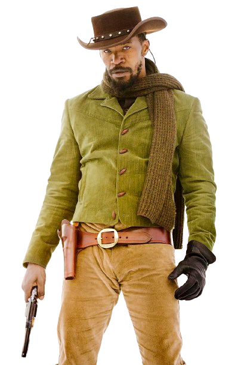
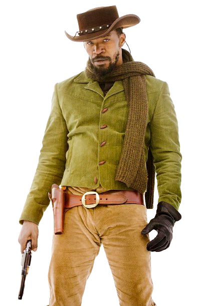

Django Livre
Quentim Tarantino
No sul dos Estados Unidos, o ex-escravo Django faz uma aliança inesperada com o
caçador
de recompensas Schultz para perseguir os criminosos mais procurados
do país e resgatar sua esposa de um fazendeiro que força seus escravos
a entrarem em competições mortais.
 
